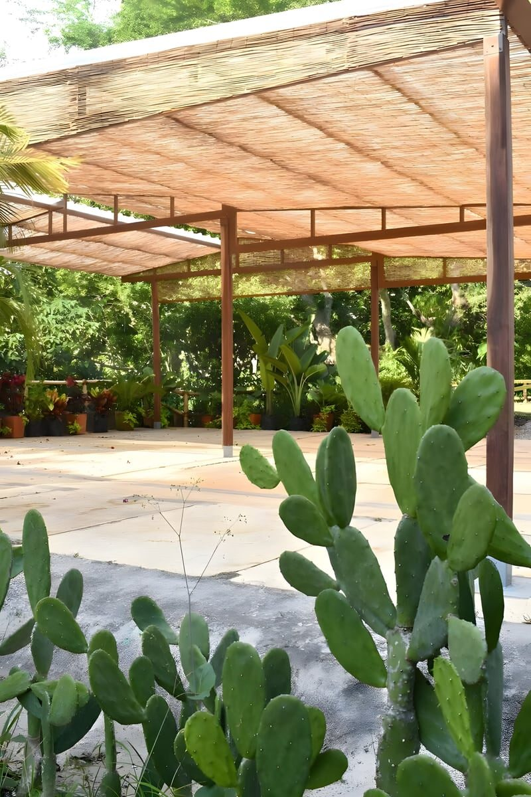
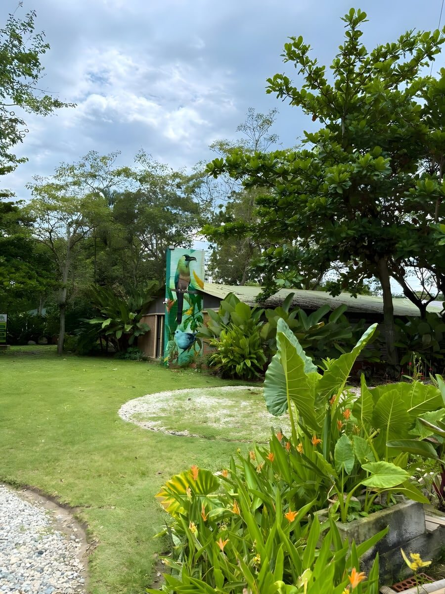
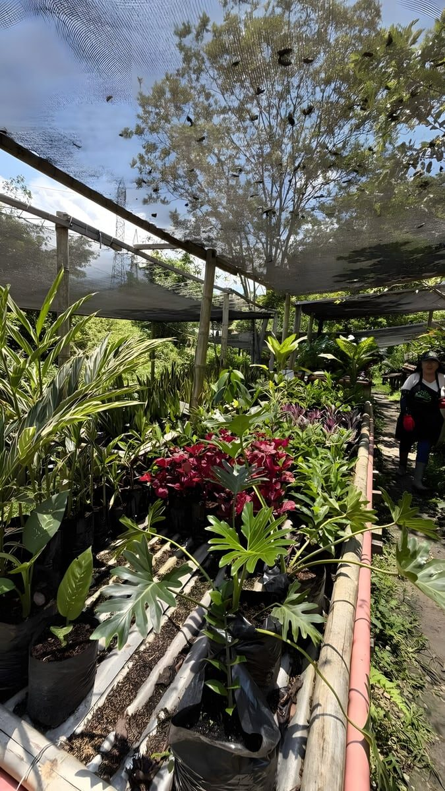
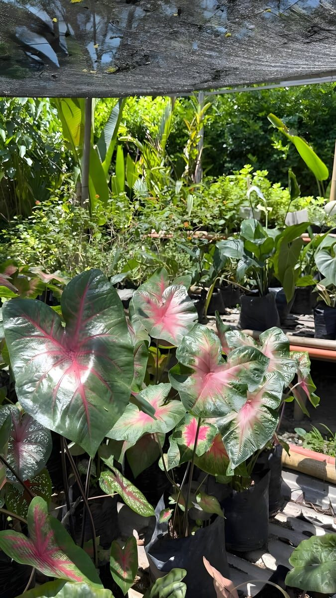
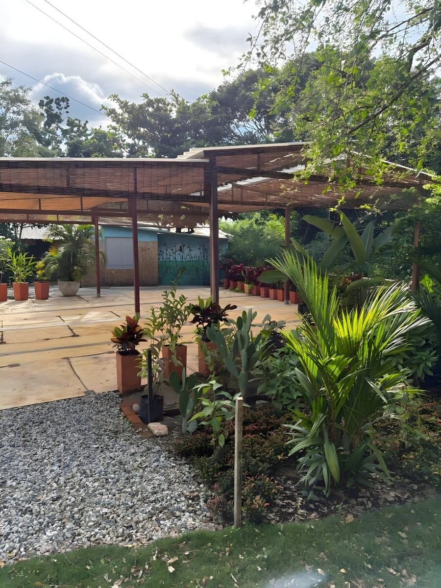
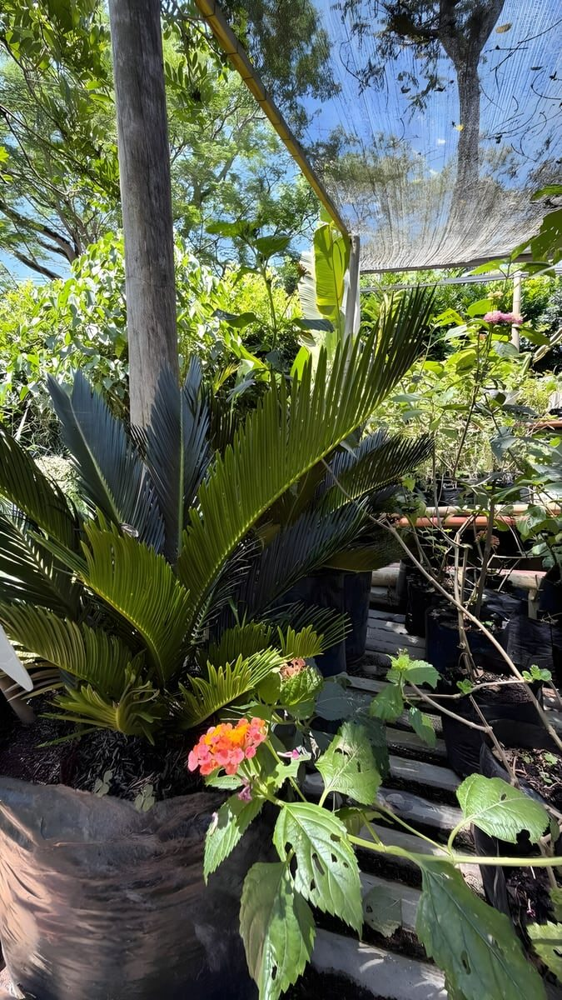
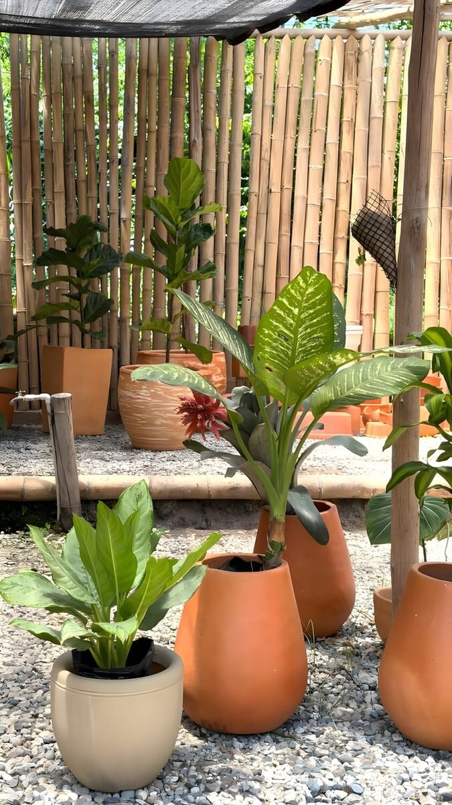

Creemos en el poder de la conexión y el aprendizaje conjunto. Por
eso abrimos el predio a actividades que promueven el bienestar
físico, mental y emocional.
01
Educación ambiental y conciencia social
Que te vuelvas a casa con algo aprendido, no sólo con fotos.
02
Desarrollo de relaciones sanas y respetuosas
Sitio de sobra para sentarse en círculo y hablarse de frente,
sin prisa.
03
Respeto por la naturaleza y por los demás
Lo dejas como lo encontraste. Tu plan pasa; el bosque se queda.
Eventos y actividades
Dime a quién traesy te digo dónde
Cinco maneras distintas de usar el mismo bosque. Escoge la tuya y aparta la fecha.
La fiesta empieza cuando se encienden los bombillosLa fiesta empiezacuando se enciendenlos bombillosLa fiesta empieza cuandose encienden los bombillos
01 Bodas y conciertos
La ceremonia bajo un árbol de copa ancha, la carpa con bombillos y la música
puesta hasta que el cielo se ponga azul oscuro.
Mesas de picnic, guirnaldas entre las ramas y sitio de sobra para salir
corriendo. Los niños se pierden a jugar y vuelven solos cuando aparece la torta.
Escribe con cuántos vienen y qué día les sirve.
Cómo llegar.
Las aves y el censo
Hasta aquí, el camino.Ahora, lo que vive en él.
El registro de aves, los ambientes del predio y el muro del concurso.
Dos apuntes del registro de aves
Endémica de Colombia
Chachalaca Colombiana
Ortalis columbiana
Endémica quiere decir que no vive de forma silvestre en ningún otro país
del mundo. Está en el registro de este predio.
Todavía no hay una fotografía suya en el muro de aquí abajo.
Ese es justamente el plan.
7
Especies migratorias boreales
Bajan desde el norte del continente y solo se dejan ver una parte del año.
No están siempre: hay que venir cuando llegan.
Aquí no solo hay aves
El jardín
347
Especies de plantas · 20 familias botánicas
Bromelias, bastones del emperador y árboles altos compartiendo el mismo
tramo de camino.
La hojarasca
18
Especies de anfibios
Donde la hoja caída guarda humedad todo el día.

La piedra al sol
23
Especies de reptiles
Piedra caliente, cactus y bordes secos: su sitio.
El dosel
3
Especies de mamíferos
Arriba, entre las ramas gruesas, lejos del camino.
Las fotografías muestran los ambientes del predio, no las especies: no hay
fotografía propia de anfibios, reptiles ni mamíferos. Las cifras vienen del
inventario biológico del lugar.
Una mariposa parda descansa en lo alto de una vara en flor.
Concurso de fotografía
Todas fueron tomadas aquí dentro
57Fotografías · 20 autores
Las hicieron los participantes del concurso, cámara en mano, dentro del predio.
Ninguna sale de un banco de imágenes y cada una conserva el nombre de quien
la tomó.
Momotus subrufescensFoto: Leyner LozanoEufonia piquigruesaFoto: Francheska SalazarAmazilia tzacatlFoto: Jaime SuarezAzulejo palmeroFoto: Francheska SalazarThraupis episcopusFoto: Fernando CaceresPiaya cayanaFoto: Jonathan Layton AvilaTodirostrum cinereumFoto: Jonathan Layton AvilaTityra inquisitor · machoFoto: Daniel ArangoChondrohierax uncinatusFoto: Leyner Lozano
Abrir el archivo completo
Ave del predioFoto: Arturo SepulvedaAve del predioFoto: Fabio HernandezZorzal piquinegroFoto: Francheska SalazarThraupis episcopusFoto: Jonathan Layton AvilaTrepatroncosFoto: Andrea ElizabethEugenia piquigruesaFoto: Andrea ElizabethCucú ardillaFoto: Andrea ElizabethAve del predioFoto: Arturo SepulvedaBarranqueroFoto: Carlos SerranoBatará carcajadaFoto: Carlos SerranoSaltador píoFoto: Carlos SerranoTityra inquisitor · hembraFoto: Daniel ArangoTityra inquisitor · hembraFoto: Daniel ArangoBrotogeris jugularisFoto: Diego CespedesBrotogeris jugularisFoto: Diego CespedesAve del predioFoto: Diego Fernando SalazarAve del predioFoto: Diego Fernando SalazarAve del predioFoto: Diego Fernando SalazarAve del predioFoto: Diego Fernando SalazarAves del predioFoto: Diego Fernando SalazarEufonia piquigruesaFoto: Erit MorattoAzulejoFoto: Erit MorattoColibríFoto: Erit MorattoLorosFoto: Fabio HernandezAve del predioFoto: Fabio HernandezAzulejoFoto: Fabiola RuedaPeriquito bronceadoFoto: Fabiola RuedaEuphoniaFoto: Fabiola RuedaLoro realFoto: Fabiola RuedaForpus conspicillatusFoto: Jaime SuarezTodirostrum cinereumFoto: Jaime SuarezCarpinteroFoto: Jesus LopezColibríFoto: Jesus LopezTirano siririFoto: Jesus LopezMachetornis rixosaFoto: José Belisario CardenasThamnophilus multistriatusFoto: José Belisario CardenasTityra inquisitorFoto: José Belisario CardenasStilpnia cyanicollisFoto: Leyner LozanoAzulejoFoto: Myriam VillalbaAzulejoFoto: Myriam VillalbaCanarioFoto: Myriam VillalbaAzulejoFoto: Rutbel RuedaCanarioFoto: Rutbel RuedaCucaracheroFoto: Rutbel RuedaSinsonteFoto: Sergio BarretoCarpinteroFoto: Yeraldilsa GamboaCanarioFoto: Yeraldilsa GamboaChurica, azulejo y tángara palmarumFoto: Yeraldilsa Gamboa
Las fotografías son de sus autores y se publican con crédito.

El mural del predio
El mismo pájaro, pintado en la pared
Es un barranquero, la misma ave que abre el muro de aquí arriba.
Está pintado sobre la pared, con las heliconias delante.
El bosque
Te llevas a casalo que crece aquí
Sale de aquí lo que ves plantado afuera. También sale lo que puedes plantar
en tu casa, en tu oficina o en tu evento.

El vivero, por dentro

Caladios en producción

La enramada, con el mural al fondo

Lista para sembrar

Materas listas para llevar
Escoges la planta en el camellón y te la llevas: en bolsa para sembrar o
en matera para poner. Lo mismo para una sala que para una oficina o el
montaje de un evento.
01Producción y venta de plantas
02Venta de abonos
03Mantenimiento de jardines y poda de árboles y raíces
04Venta de productos y alquiler de complementos para decoración de eventos
El vivero es además un espacio de aprendizaje: apoya los talleres de
conexión con la naturaleza que se hacen en el parque.
Ver los talleres
Registro ICA
Vivero registrado ante el Instituto Colombiano Agropecuario.
Resolución n.º 00000819 del 3 de febrero de 2025.